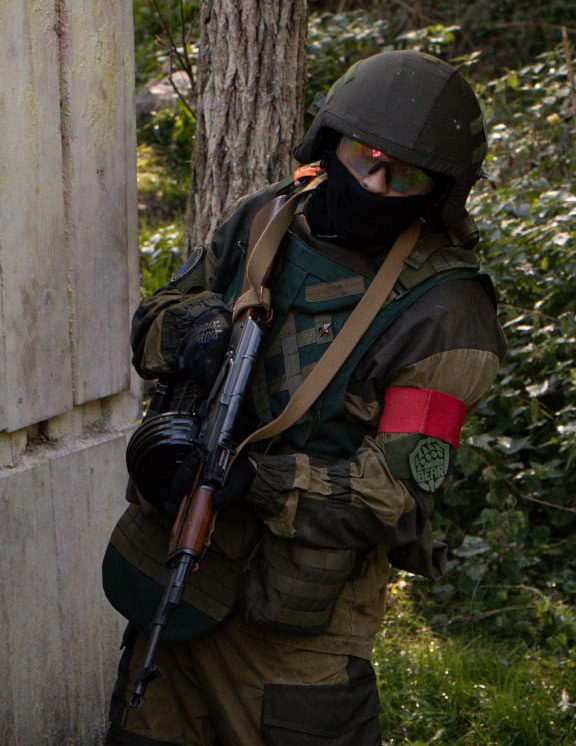
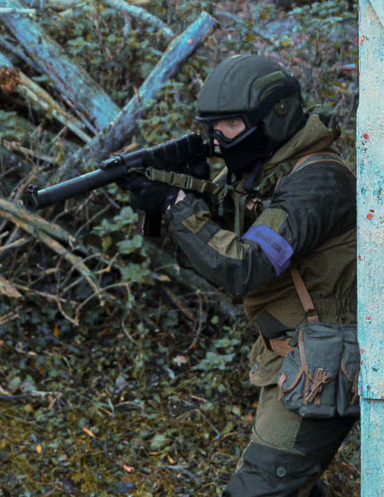
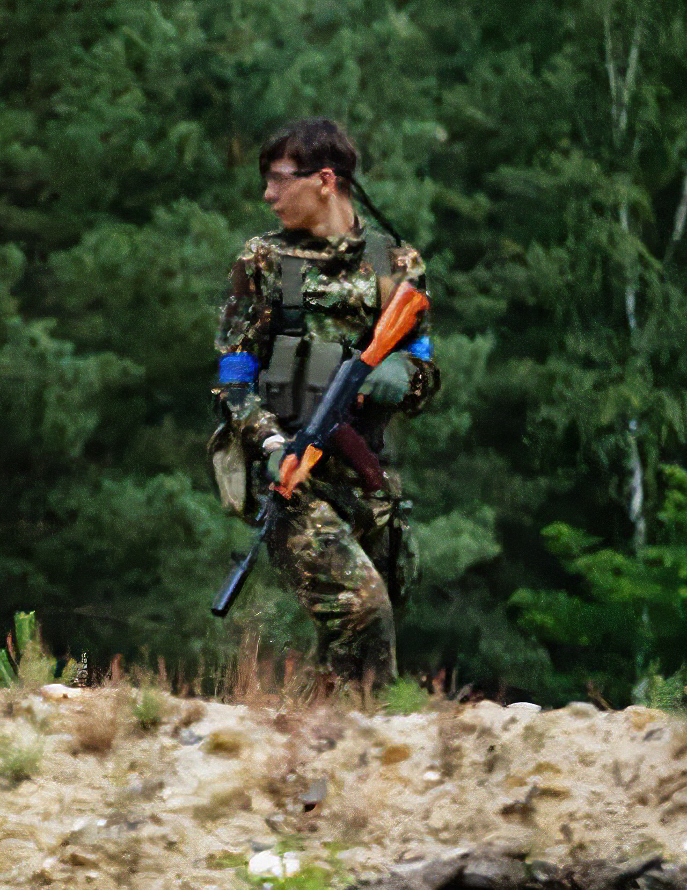

Das Team
KORUND Airsoft entstand aus einer Gruppe Stammspieler im Airsoftpark Aachen, die zunächst einfach aus Vorliebe zu Ostblock-Gear zusammengespielt haben. Nach und nach festigte sich der Wunsch ein Team zu gründen und die Spielfelder in Nordrhein Westfalen mit unserem östlichen Charme zu entzücken.
Die Teamseite präsentiert einerseits unsere Mitglieder und vermittelt andererseits bildlich die Stil- und Ausrüstungsanforderungen. Bei jedem Teammitglied sind Lieblingsreplika und -tarnung gelistet - ideal zur Inspiration für das eigene Loadout und als Gesprächsgrundlage beim Kennenlernen.



